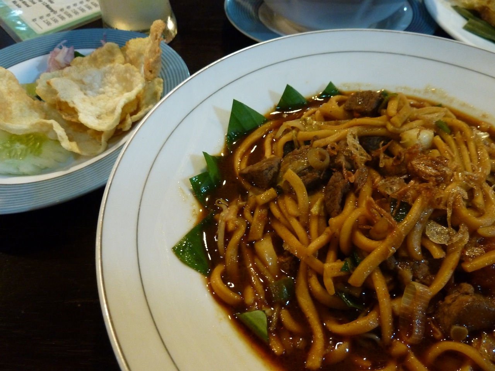
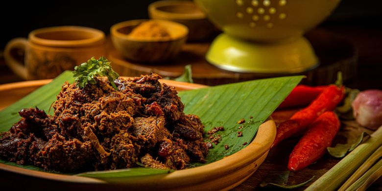

| Nama | Deskripsi | Resep |
|---|---|---|
| Mie Aceh | Mie yang berasal dari Aceh yang berisi mie kuning tebal dengan irisan daging sapi, daging kambing atau seafood, seperti udang dan cumi |
500 gr mie basah, 150 gr udang segar yang sudah dikupas dan dibuang kulitnya, 150 gr daging (sapi/kambing) yang sudah direbus sebelumnya |
| Bika Ambon | Bika ambon adalah penganan khas Medan, Sumatera Utara, Indonesia. Penganan ini terbuat dari bahan-bahan seperti tepung tapioka, telur, gula, dan santan. |
100 gram tepung tapioka, 50 gram tepung terigu serbaguna, 100 gram gula pasir, 1 sdt kunyit bubuk atau pewarna makanan kuning |
| Rendang | Rendang atau randang dalam bahasa Minangkabau adalah masakan Minangkabau yang berbahan dasar daging dan berasal dari Sumatera Barat, Indonesia. |
1 kg daging sapi, potong-potong, 5 buah cabai merah teropong, 5 buah cabai merah keriting, 9-10 buah bawang merah |